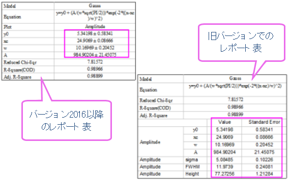
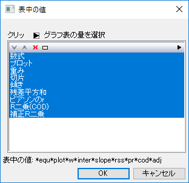
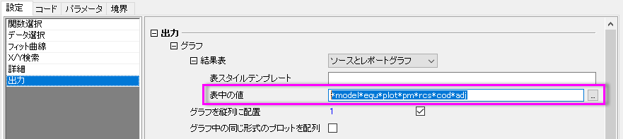

FAQ-826 新しいレポート表「結果±エラー」を、旧バージョンのレポート表「結果とエラー」に関連付けるには？
最終更新: 2018/06/29
Origin206では、「結果±エラー」は、デフォルトでフィット後にレポート表に表示されます。旧バージョンでは、「結果とエラー」は、2列にそれぞれ表示されていました。

フィットしたパラメータ値とその誤差に±したくない場合は、古いテーブルに戻り、パラメータと誤差を2列で表示させます。
既存のグラフで、新しいテーブルを古いものに戻すには
方法 1:
- 新しいレポート表を右クリックして、表中の値を選択し、表中の値ダイアログを開きます。
- 全ての項目を選択して、削除ボタンをクリックします。
- OKボタンクリックして、旧バージョンのレポート表に戻ります。
- 
方法2:
- NLFitダイアログを開き直し、設定タブの出力サブタブで、表の値を空欄にします。
- 
- フィットボタンをクリックし、フィットを実行します。そうすると、古いバージョンのレポート表が戻ります。
- 新しくNLFitダイアログを開き直し、設定タブの出力サブタブで、表の値を空欄にします。
- NLFitダイアログのデフォルトダイアログテーマと同様に保存するために、ダイアログテーマの右の矢印をクリックして、デフォルトとして保存を選択します。

- このように設定すれば、以降の操作にも反映されます。
Keywords:レポート表,
表の値, 結果, 誤差, 古いバージョンのレポート表, 値と誤差を分ける, ± , プラスーマイナス記号を削除する, 誤差を独立して表示する